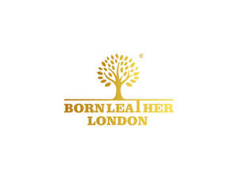

Trade Mark Journal No.2025/013 28 March 2025
UK00004169650 6 March 2025 (18,25)

- Class 18
- Leather; Boxes of leather or leather board; Leather or leather-board boxes; Leather handbags; Leather for shoes; Leather cloth; Key-cases of leather and skins; Saddlery of leather; Leather bags; Laces (Leather -); Leather laces; Leather purses; Leather briefcases; Synthetic leather; Studs of leather; Leather for furniture; Leather straps; Straps (Leather -); Boxes of leather or leatherboard; Leather suitcases; Briefcases [leather goods]; Straps of leather [saddlery]; Leather wallets; Leather thongs; Tanned leather; Leather cord; Handbags made of leather; Polyurethane leather; Leather cords; Leather pouches; Leather boxes; Boxes of leather; Pouches of leather; All-purpose leather straps; Trimmings of leather for furniture; Furniture (Leather trimmings for -); Leather trimmings for furniture; Cases of leather or leatherboard; Cases, of leather or leatherboard; Leather leashes; Leashes (Leather -); Briefcases made of leather; Bags made of leather; Leather for harnesses; Leather luggage straps; Bands of leather; Leather bags and wallets; Labels of leather; Leather cases; Hat boxes of leather; Boxes of leather (Hat -); Leather thread; Thread (Leather -); Leather cases for keys; Harness made from leather; Leather shoulder belts; Belts (Leather shoulder -); Girths of leather; Valves of leather; Leather shopping bags; Leather luggage tags.
- Class 25
- Trousers of leather; Leather pants; Leather shoes; Leather jackets; Leather dresses; Leather slippers; Leather waistcoats; Leather suits; Suits of leather; Leather garments; Leather coats; Leather clothing; Clothing of leather; Leather (Clothing of -); Motorcyclists' clothing of leather; Belts made of leather; Leather belts [clothing]; Suede jackets; Slippers made of leather; Suits made of leather; Clothing made of leather; Japanese style sandals of leather; Leather headwear.
BORNLEATHER LONDON LTD